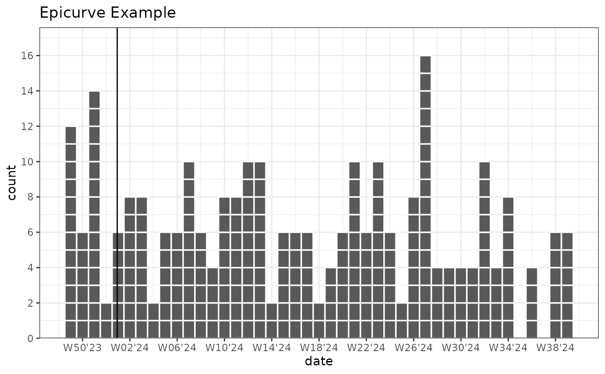

Determines turn of year dates based on the range of either the x or y axis of the ggplot.
geom_vline_year()draws vertical lines at the turn of each yeargeom_hline_year()draws horizontal lines at the turn of each year
Usage
geom_vline_year(
mapping = NULL,
position = "identity",
year_break = "01-01",
break_type = c("day", "week", "isoweek", "epiweek"),
just = NULL,
...,
show.legend = NA
)
geom_hline_year(
mapping = NULL,
position = "identity",
year_break = "01-01",
break_type = c("day", "week", "isoweek", "epiweek"),
just = NULL,
...,
show.legend = NA
)Arguments
- mapping
Mapping created using
ggplot2::aes(). Can be used to add the lines to the legend. E.g.aes(linetype = 'End of Year'). Cannot access data specified inggplot2::ggplot(). Panels created byggplot2::facet_wrap()orggplot2::facet_grid()are available withaes(linetype = PANEL).- position
Position adjustment, either as a string, or the result of a call to a position adjustment function.
- year_break
String specifying the month and day ("MM-DD") or week ("W01") of the year break . Defaults to:
"01-01"for January 1. "Week" and "MM-DD" are converted automatically based on a leap year (366 days) which starts on Monday.- break_type
String specifying the type of break to use. Options are:
"day"(default): Line drawn based on the specified day for each visible year."week"or"isoweek": Line drawn based on the Monday of the specified week for each visible year. (e.g., "W01" for new year or "W40" for start of influenza season)"epiweek": same as week, but the line is drawn one day earlier (Sunday).
- just
Numeric offset in days (justification). Shifts the lines from the year break date. Defaults to
-0.5forday, which shifts the line by half a day so it falls between December 31 and January 1 by default. Defaults to-3.5(i.e. half a week) forweek,isoweekandepiweek.- ...
Other arguments passed to
layer. For example:colourColour of the line. Try:colour = "grey50"linetypeLinetype. Try:linetype = "dashed"orlinetype = "dotted"linewidthWidth of the line.alphaTransparency of the line. used to set an aesthetic to a fixed value.
- show.legend
logical. Should this layer be included in the legends?
NA, the default, includes if any aesthetics are mapped.FALSEnever includes, andTRUEalways includes.
Examples
library(ggplot2)
set.seed(1)
plot_data_epicurve_imp <- data.frame(
date = rep(as.Date("2023-12-01") + ((0:300) * 1), times = rpois(301, 0.5))
)
# Break type day
ggplot(plot_data_epicurve_imp, aes(x = date, weight = 2)) +
geom_epicurve(date_resolution = "week") +
geom_vline_year() +
labs(title = "Epicurve Example") +
scale_y_cases_5er() +
scale_x_date(date_breaks = "4 weeks", date_labels = "W%V'%g") + # Correct ISOWeek labels week'year
theme_bw()

# Break type week
ggplot(plot_data_epicurve_imp, aes(x = date, weight = 2)) +
geom_epicurve(date_resolution = "week") +
geom_vline_year(break_type = "week") +
labs(title = "Epicurve Example") +
scale_y_cases_5er() +
scale_x_date(date_breaks = "4 weeks", date_labels = "W%V'%g") + # Correct ISOWeek labels week'year
theme_bw()